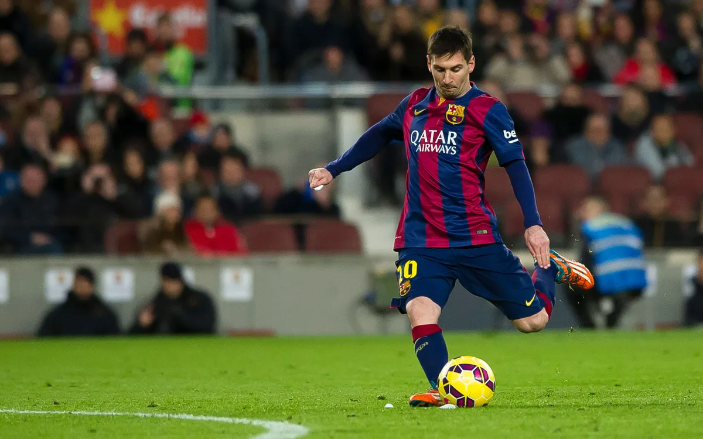
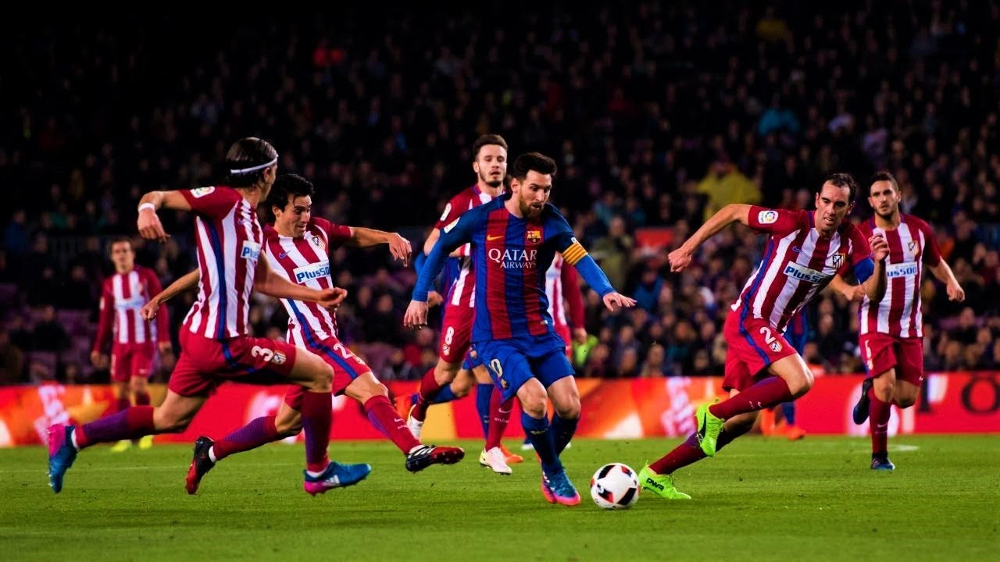
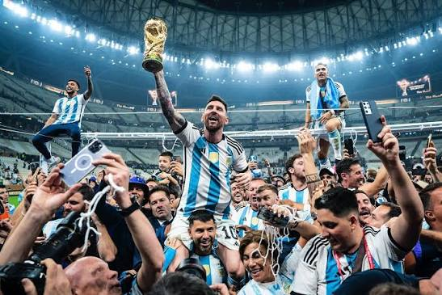
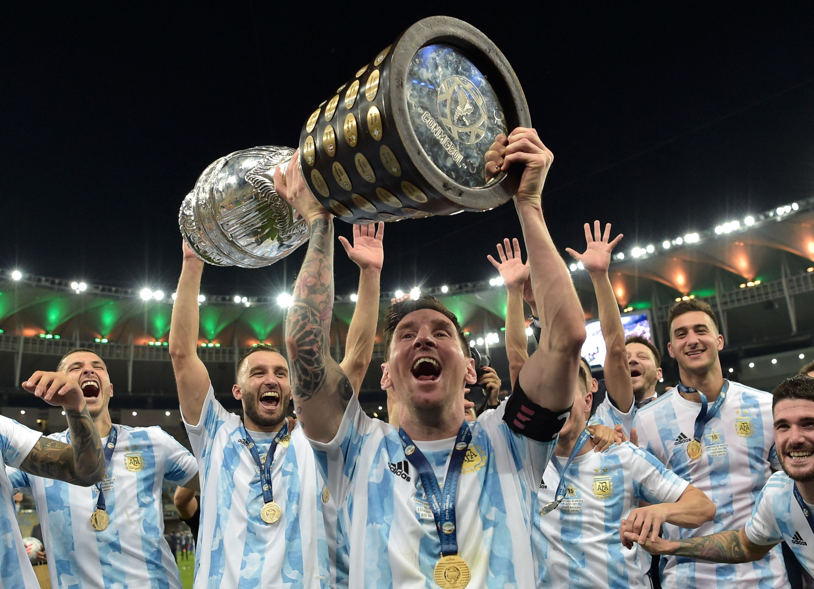
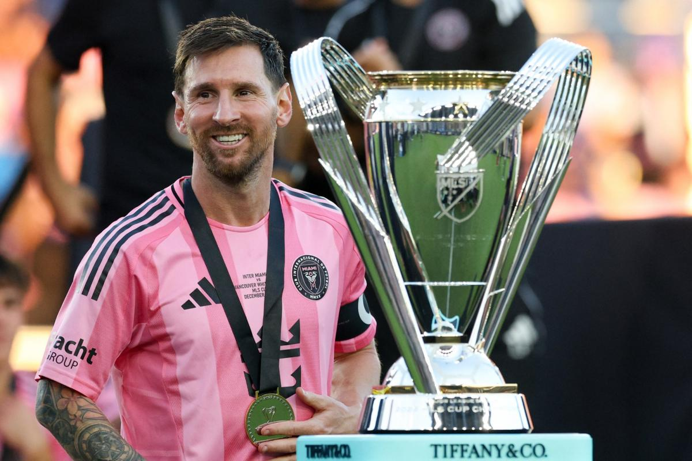

To assert that Lionel Messi "rigged" football is a metaphorical framing for an athlete whose absolute mastery over spatial geometry and temporal pacing completely shattered the parameters of modern athletics. During his formative and peak years at Camp Nou, observing his progression through densely populated defensive blocks felt less like witnessing a traditional athletic contest and more like watching a sentient algorithm bypassing physical limitations. How else can one intellectually reconcile a 5'7" playmaker effortlessly unravelling elite tactical frameworks while the ball remains permanently tethered to his left boot?

In our estimation, what rendered the Barcelona-era anomaly so profoundly unfair was his radical economy of kinetic output. While contemporary midfielders endured exhaustive telemetry metrics, sprinting incessantly across every blade of grass, Messi spent the inaugural phase of matches in a state of calculated reconnaissance. Once the collective cognitive synchronization of the backline faltered for a fraction of a second, he exploited that microscopic entropy, rendering defensive countermeasures utterly obsolete.
Relocating from Catalonia to the French capital marked a fascinating metamorphosis in Messi’s tactical DNA. No longer relying primarily on blistering acceleration or explosive lateral shifts, his stint at the Parc des Princes showcased a masterclass in psychological preservation and pure orchestration. He gracefully evolved into a deep-lying metronome, dictating tempo with surgical precision. Critics who superficially claimed he was coasting fundamentally misunderstood the evolution: he had optimized the game to a point where physical exertion was secondary to absolute cerebral supremacy.
Playing under European floodlights, Messi treated defenders not as physical obstacles to outrun, but as variables in a complex mathematical equation. Every diagonal switch of play and disguised through-ball exposed the structural fragilities of modern defensive setups, proving that his impact transcended mere goal-scoring statistics.

If his club dominance stretched credibility, the narrative arc of the 2022 FIFA World Cup defied all literary conventions. If an ambitious Hollywood screenwriter pitched such a symmetrical, emotionally charged trajectory, industry critics would universally dismiss it as derivative and heavily scripted. Consider the core ingredients: an opening-match catastrophe against Saudi Arabia, immense national pressure, a theatrical final featuring an Mbappe masterclass, and a cathartic coronation in Lusail.

What makes this chapter so transcendent is how the entire Argentine squad functioned as an extension of his tactical and emotional will. He didn't just win a trophy; he lifted a multi-generational psychological curse, proving that destiny itself could be systematically rewritten through unwavering resilience and unmatched technical mastery on the grandest stage imaginable.

As he closes his illustrious career chapters in South Florida, Messi’s impact has transcended athletic competition entirely, turning Major League Soccer into a global focal point. Far from a conventional retirement tour, his arrival in Miami represents a cultural and structural shift. He operates almost as a player-manager hybrid on the pitch, bending matches to his rhythm with effortless elegance while inspiring an entire new generation of American sports fans.
Whether viewed through the lens of meticulous tactical evaluation or broader cultural iconography, his journey remains an unrepeatable anomaly. He transformed a volatile, chaotic team sport into a personalized art form without ever alienating his peers. We were simply privileged witnesses to a living legend who permanently redefined the absolute ceiling of human athletic potential.